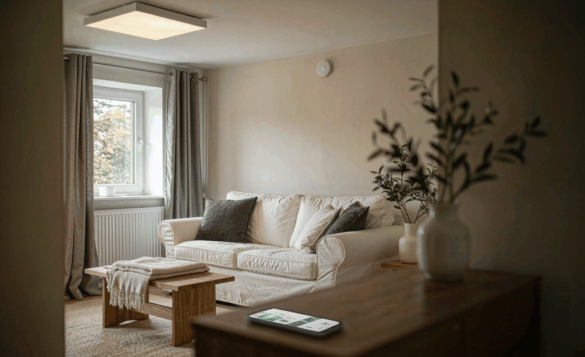
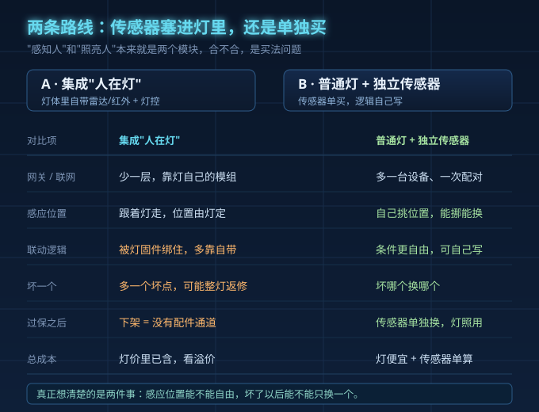
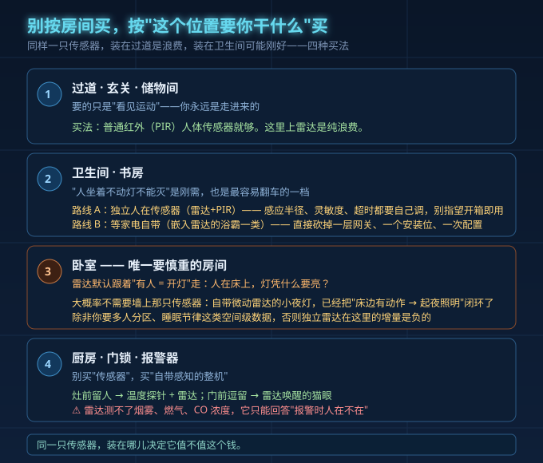
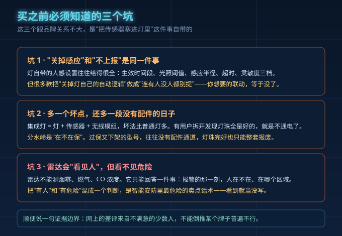

双11这一周，被点名最多的是灯。微博10月12日一条全屋智能痛点征集帖，一天379个赞、257条回复；抖音《反向种草·吸顶灯》被顶到4.8万赞、近4000条评论，评论区把现状总结成六个字：差价很大，区别不大。底下2694个赞的评论，来自一位自称在欧普门店干了23年的销售。
差价很大、区别不大，套在"人来灯亮"上更贴切。今天不聊参数，只聊一件事：灯上那个"人在感应"，该给灯体，还是给一只单买的传感器。建议别按房间买，按位置买。
一、先分清两件事：感知人，和照亮人
"人来灯亮"其实是两个模块在配合。传感器负责判断：这里有没有人、是不是在动；灯具和驱动电源负责执行：亮不亮、亮多少、多快灭。
集成把传感器塞进灯体，省一个网关、一个安装位、一次配置；代价是传感器和灯绑死，灯坏了感应跟着失效。分体把两件事拆开，位置自由、逻辑能自己写、坏一个换一个；代价是多留一个安装位、多配网关、多调几遍。
一句话：集成买的是省事，分体买的是控制权。

二、一张表看清：钱花在哪，坏点在哪
| 对比维度 | 集成"人在灯" | 普通灯+独立传感器 |
|---|---|---|
| 安装位/网关 | 省一个安装位、少配一次，网关需求看协议 | 多留一个安装位、多配一次，自动化条件更灵活 |
| 感应位置自由度 | 固定在灯的朝向和高度 | 想装哪装哪，跟着人走 |
| 逻辑能不能自己写 | 多半用自带逻辑，改了容易和开灯条件打架 | 时间段、照度、半径、超时都能自己定 |
| 单个坏点的影响 | 传感器坏或灯坏，一起报废 | 传感器归传感器，灯归灯 |
| 过保之后怎么办 | 过保加下架，等于没有维修通道 | 坏哪个换哪个，灯照常买 |
| 总成本 | 灯的单价里已经含了感应那部分 | 智能灯泡十几块起，传感器另算 |
| 适合谁 | 想少动手、位置固定、接受开箱即用的人 | 愿意调、位置会变、想接管逻辑的人 |
三、按位置分四档买
同一个功能，装在不同位置，该花的钱完全不同。
第一档：过道、玄关、储物间——PIR人体传感器就够。你永远是"走进来"的，红外最擅长抓进入动作，上雷达是纯浪费。
第二档：卫生间、书房——"静止存在"是刚需，两条路。路线A单买独立人在传感器，买雷达加PIR的混合款，安装高度、灵敏度阈值都得自己调，别指望开箱即用；路线B等家电自带，嵌入式雷达把网关、安装位、配置一次砍掉。这一档品控争议最集中。
第三档：卧室——大概率不用墙上那只传感器。几十块自带微动雷达的夜灯，已经把"床边有轻微动作就起夜照明"的闭环做完了。除非你要多人分区、睡眠节律这类空间级数据，否则独立雷达的增量是负的：鬼影误报加深夜误亮，砸在你最不能忍的场景。
第四档：厨房、门锁、报警器——别买"传感器"，买"自带感知的整机"。灶前留人交给温度探针加雷达，门前逗留交给雷达唤醒的猫眼，判断和执行做在一个机身里，比外挂省事。

四、三个必须知道的坑
第一，"关选项等于不上报"是个死结。人感设置给得很足——时间段、照度阈值、感应半径1到5米、超时5秒到5分钟、灵敏度三档——但默认是关的。卧室尤其明显，雷达默认"有人等于开灯"，有用户吐槽"关都关不了"。买之前先确认：这逻辑你能不能接管。

第二，人在灯多一个坏点，而"过保加下架"没有维修通道。有用户10月2日发帖说灯通电不亮，客服回"过保了，没有官方维修"，拆开看灯珠都是好的；10月10日另一条避雷帖标题就是结论——"产品下架等于无配件无法维修"。反例也有：7月一位用户主灯变暗频闪，还在保，客服当天给方案，从寄新灯到上门取走坏灯全程6天。边界要说清：这只是个例，不能倒推某品牌普遍不可靠；但过保加下架确实没有维修通道，灯珠完好也只能整机报废。
第三，雷达不等于危险检测。它不能检测烟雾、燃气、一氧化碳，只能回答"报警时人在不在、在哪"。把"有人"和"有危险"混成一个判断，是智能安防最危险的卖点话术。
五、动手前，先做三件事
一、先想位置。拿户型图，给每个要装感应的位置标上"要你干什么"——走进去就亮，还是静坐也得有人。
二、先问驱动和协议。功能能不能落地，出厂那一刻定了一大半：支不支持你要的协议、调光深度够不够、多灯联动有没有延迟。只能开关、只切三档色温的，溢价其实很低。
三、先问售后。质保几年、停产有没有配件、传感器和灯是不是绑在一起。灯是耐用品，这笔账要按五年、十年算。
一句话总结：过道玄关储物间用最便宜的PIR；卫生间书房要么认真选独立传感器、要么等家电自带；卧室别急着加；厨房门锁直接买自带感知的整机。
常见问题
人在灯和独立传感器哪个好？ 看位置。走动型空间用独立PIR就够；安静久待的空间，要么把独立传感器调明白，要么买把感知做进机身的整机。
卧室集成人在传感器，会不会把睡觉识别成有人开灯？ 这是问得最多的问题，建议很统一：别用灯自带的逻辑，自己写灵活很多。卧室更稳妥的做法是回到夜灯那一步。
差价这么大，钱到底差在哪？ 拆开是三层：光学与结构件、协议与调光、交付服务。其中真实存在的是用料和调光能力；浮动最大的是"护眼""全光谱"这类标签溢价。判断很简单：详情页敢不敢给光谱曲线、给不给蓝光等级和频闪实测。
我们做驱动电源的，说白了，灯能不能好好发光、好好执行，多半在电源那一层就定下了。